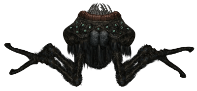
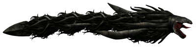
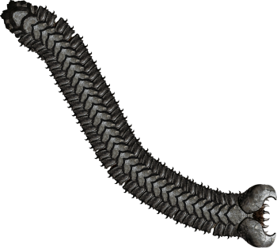
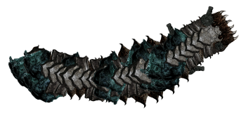

Bosses
Existem 3 bosses que podem ser encontrados no abismo que é uma area mais profunda onde só há uma entrada por mapa e 2 que so podem ser encontrados no centro de Europa e um deles sendo o boss final do jogo,
Latcher
Descrição:
O Latcher é uma criatura grande que reside no Abismo. Tem vários olhos que brilham,
revelando sua posição para qualquer pessoa que olhe pelas janelas ou por um periscópio.
Possui quatro pernas que facilitam a identificação de sua assinatura no sonar. Dentro da boca essa
criatura esconde uma língua incrivelmente longa que pode se estender até 45 metros. Uma vez que a
língua faz
contato com um alvo, o Latcher só o soltará se se sentir ameaçado, desejar atacar de um
novo ângulo, ou comeu tudo o que pegou.

Caríbdis
Descrição:
O corpo de Caríbdis aparece como uma grande massa de tentáculos escuros servindo para navegação, e
terminando com uma ponta afiada, que lembra a ponta de uma lança. Seus dentes e língua enorme são
vermelho-carmesim.
Os jogadores verão primeiro enormes sinais laranja no sonar, que ficam mais fortes à medida que o
Caríbdis está mais próximo do submarino. A silhueta do sonar do Caríbdis lembra um enorme
golfinho.

Endworm
Descrição:
O Endworm é uma criatura titânica semelhante a um verme, cujo nome vem de sua capacidade de "acabar"
com a vida de qualquer pessoa que o encontre. É a maior e mais destrutiva criatura encontrada
naturalmente no oceano de Europa.
O Endworm em si é um gigante colossal, um leviatã semelhante a uma serpente coberto por uma armadura
semelhante a uma pedra incrivelmente durável. É incrivelmente rápido, agressivo e durável o
suficiente para resistir a munições nucleares, mas ainda apresenta certas vulnerabilidades. Sua
presença é muitas vezes preludida por seu constante rugido monstruoso, que muitas vezes é visível no
sonar de um submarino devido à sua intensidade.

Cyborg Worm
Descrição:
O Cyborg Worm parece ser um grande Endworm com partes de sua concha substituídas por materiais
alienígenas e suas mandíbulas substituídas por torres alienígenas. Também é consideravelmente mais
curto que um Endworm normal, possivelmente implicando que uma parte de sua cauda foi cortada. Os
acréscimos alienígenas, e o fato de residir na fortaleza construída pelos Antigos para abrigar
Jove em Júpiter, implica que pode ser um Endworm modificado e escravizado pelos Antigos para
servir como seu "cão de guarda".

Jove
Descrição:
Jove é o chefe final do Barotrauma. Uma antiga criatura semelhante a
um deus encontrada no Olho de Europa, é adorada pelos Antigos. Possui um escudo que bloqueia
projéteis e todos os danos, e postes devem ser destruídos para desativar o escudo. Os antigos
referem-se a Jove como YOH-WEY